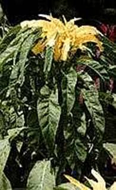
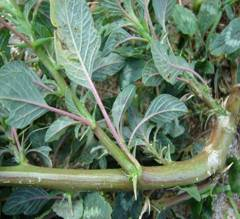

HORT 281 :: Lecture 31 :: ORIGIN, AREA, PRODUCTION, VARIETIES, PACKAGE OF PRACTICES FOR AMARANTHUS, PALAK AND GOGU

Origin, area, production, varieties, package of practices for AMARANTHUS, PALAK and GOGU
AMARANTHUS - Amaranthus spp. (2n = 32, 34, 64) - (Hindi: Chaulai)
Family: Amaranthaceae
Amaranth is the most common leaf vegetable grown in Kerala and Tamil Nadu. Leaves and succulent stem are good sources of iron (38.5 mg/100g), calcium (350-400 mg/100g), vitamin A and vitamin C. Absorption of calcium from amaranth is however poor. The iron availability is only about 15.2 – 53.6% of total iron. High oxalate content (1-2%) and nitrate (1.8-8.8 g/ kg dry matter) levels are reported from leaves of various species. Short duration, quick response to manures and fertilizers, high yield, easiness in cultivation and availability of diverse types suited to specific agro-climatic situations make it a favourite crop of farmers to fit in any cropping systems. Both leaf and grain types play a vital role to combat malnutrition of poor people.
Origin and distribution
Centres of diversity for amaranth are Central and South America, India, South East Asia with secondary centres of diversity in West and East Africa. Leaf amaranth is a native of India.
Taxonomists recognize two sections in Amaranthus, viz., Amaranthus and Blitopsis, Section Amaranthus, includes important grain types where the inflorescence is terminal. Section Blitopsis includes leaf types and flowers are borne in clusters in leaf axils.
Majority of leaf cultivars grown in India belong to Amaranthus tricolor. Major species found in India are:
- tricolor (Syn) A. gangeticus,
A. mangostanus, A. polygonoides cultivated - leaf type
A dubius cultivated -leaf type
A. blitum (Syn: A. lividus) cultivated - leaf type
A. tristis wild - leaf type
A. viridis wild - leaf type
A. spinosus cultivated - grain type
A. cruentus cultivated - grain type
A. caudatus cultivated - grain type
| A. viridis | ||
|  | ||
| A. tristis | A. blitum | A. dubius |
|  | ||
| A. spinosus | A. cruentus |
|
A. caudatus |
||
Botany
Amaranth is an annual herb with erect growth and scarce to profuse branching habit. Stem is succulent and green or purple or mixed shades of these two. Leaf is simple, alternate, with obviate to lanceolate shape. Leaf colour is green or red or with different shades of above. Flowers are borne terminally and in axils of leaves in clusters. Basic unit of inflorescence is called as glomerule. Flowers are small, unisexual and monoecious. Most of cultivated types are monoecious. Proportion of male and female flowers varies in an inflorescence. Each glomerule consists of a staminate flower and a number of pistillate flowers. The extent of cross pollination is governed by proportion of male and female flowers in an inflorescence and position of inflorescence in plant. Percentage of male flowers in a glomerule is 0.5 in grain types and 10.25 in leaf types. According to Pal and Khoshoo (1978), leaf amaranths are predominantly self pollinated due to presence of a large number of male flowers per glomerule, terminal inflorescence and development of axillary glomerules. Grain types favour cross pollination.
Stigma of pistillate flower is receptive several days prior to opening of staminate flowers in an inflorescence. Wind help in transfer of pollen grains from male flowers of a glomerule / inflorescence / plant to another glomerule / inflorescence / plant. But grain species with colorful inflorescence are occasionally visited by bees (Khoshoo and Pal, 1970).
Chromosome number varies with species in amaranth. The diploid species have 2n=32 or 34. A tricolor is with 2n=34 white A. cruentus and A. tristis have 2n=32. The tetraploid species, A dubius has 2n=64.
Varieties
Cultivated leaf amaranth varieties and cultivars differ in size, shape and colour of leaves and stem, position of inflorescence etc. and belong to different species. A brief description of improved varieties developed by different Research Institutes is given below:
1) Tamil Nadu Agricultural University, Coimbatore-3
CO. l (A. dubius) |
This tetraploid variety was developed by selection from ("local germplasm. Stem and leaves are dark green; leaf-stem ratio is 2.0; inflorescence terminal and axillary; lacks initial vigour but makes rapid growth after 30 days; suitable for late harvest; resistant to Rhizoctonia leaf blight; green yield 8.0 t/ha; seed yield 1.5 t/ha. |
CO.2 |
Stem and leaves green, leaves lanceolate and slightly elongate, leaf-stem ratio 1.8; suited for early harvest; yield 10.78 t/ha. |
CO.3 |
This is specifically suited for clipping of tender greens and is locally known as ‘Araikeera' in Tamil. Leaves are small and green; stem is slender and tender. First clipping is possible in 20 days after sowing. Nearly 10 clippings can be taken over a period of 90 days. Due to very high leaf-stem ratio, cooking quality and taste are excellent. Special care is required in land preparation for the variety. |
CO. 4 |
This grain type makes rapid vegetative growth within a period of 20-25 days. Plants are dwarf; grain yield 2.0-2.5 t/ha in 80-90 days. |
CO.5 |
Leaves double coloured with Green and pink and is free from fibre. It gives a rosette growth in early stages and first harvest is possible in 25 days; yield 40 t/ha in 55 days. |
Sirukeerai (A. polygonoides) is a traditional cultivar in Tamil Nadu, suited for uprooting at 25 days after sowing; leaves are small, ovate with blunt bifurcated tip and have long petiole; collar region is dark pink and at leaf axil a miniature branch initiates.
2) IARI, New Delhi
Pusa Chotti Chaulai (A. blitum): Plants dwarf with succulent, small and green leaves; responds well to cutting.
Pusa Badi Chaulai (A. tricolor): Plants tall and stem thick with large green leaves; responds to cutting.
Pusa Kirti (A. blitum): Green leaved variety with green and thick stem; leaf lamina broad ovate; ready for harvest in 30-35 days and extends up to 70-85 days; yield 55 t/ha; specifically suited for summer.
Pusa Kiran (A. tricolor): This is developed by natural crossing between A. tricolor and A. tristis and has more characteristics of A. tricolor. Leaves are glossy green with broad ovate lamina; leaf-stem ratio is 1.0:4.6; yield 35 t/ha in 70-75 days; suited for kharif season.
Pusa Lal Chaulai (A. tricolor): Upper surface of leaves are deep red and lower surface purplish red; yield 45-49 t/ha in 4 harvests.
3) IIHR, Bangalore
Arka Suguana (A. tricolor): A multicut variety with broad green leaves. First picking starts in 24 days after sowing and continue up to 90 days. Moderately resistant to white rust. Yield 17-18 t/ha.
Ark Arunima (A. tricolor):A multicult variety with broad dark purple leaves. First picking starts in 30 days after sowing and two subsequent cuttings at 10-12 days interval. Yield 27 t/ha.
Climate and Soil
Amaranthus is widely distributed in both tropical and sub tropical regions. Leaf amaranth is a warm season crop adapted to hot humid climatic conditions. It is grown throughout the year in tropics and in autumn, spring and summer seasons in temperate regions. Most of leaf types are day neutral in habit but differ in their day length requirements and respond differently to changes in photo and thermoperiodism. Grain types, A. caudatus, A. cruentus and A. edulis are short day species while A. hypochondriacus is day neutral.
Amaranth comes up well in well drained loamy soil rich in organic matter. The ideal is pH is 5.5-7.5 but there are types which can come up in soils with pH as high as 10.0. Red amaranth requires bright sunlight for colour development.
Land preparation and sowing
Amaranth is harvested by pulling out and by frequent clippings (multicut). Cultivation practices differ according to method of harvest, duration, growth pattern of variety, etc.
Land is prepared to a fine tilth by thorough ploughing and harrowing. Well decomposed and powdered organic matter @ 20-25 t/ha is incorporated with the soil at the time of final ploughing.
Direct sowing
For direct sowing, field is divided into small plots of about 3.0-3.6 m long and 1.5-1.8 m width with irrigation channels running between every two plots. In case of irrigation by pot watering, reduce width of plots to 90-100 cm. Amaranth seeds, being small in size, are mixed with fine sand and sown uniformly by broadcasting. The seeds are covered either by raking up soil and by covering with a thin layer of sand or soil. This is followed by a light irrigation. Soil is kept moist by frequent irrigation. Grown up seedlings are selectively pulled out at 30 days after sowing and marketed in small bundles along with roots. Seed rate for direct sowing is 2.0-2.5 kg/ha.
After first pulling, urea is broadcasted in beds and irrigated for quick growth of remaining seedlings so that second pulling out is possible 10-15 days after first pulling. This is repeated so that final pulling is over by 55-60 days after sowing.
Transplanted method
This is mainly practiced for multi-cut varieties. The land, after thorough ploughing and leveling, is made into shallow trenches / basins of 50-60 cm width and convenient length. Well decomposed farmyard manure is applied in trenches and thoroughly incorporated in soil by digging. 20-25 days old seedlings, already raised in nursery, are transplanted in trenches at 20-25 x 10-15 cm spacing. Seed requirement for transplanted crop is only 500 g/ha.
Manures and fertilizers
Amaranth is a heavy feeder and high yielding crop. 20-25 tonnes of FYM and 50:25:20 kg NPK / ha are recommended as basal dose. Under pulling out method, 20 kg N should be top dressed twice during subsequent pulling out of seedlings. For clipping varieties, a still higher dose of 75:25:25 is advisable. Apply N after every clipping or cutting. Foliar spray of 1% urea or diluted cow urine at every harvest is good for promoting further growth and for high yield.
Irrigation
Grain amaranth is a drought tolerant crop, but leaf amaranth requires frequent irrigation to keep soil moist. Frequency of irrigation depends on soil.
Interculture
Amaranth is a short duration and shallow rooted crop. Provide light hoeing to prevent soil crust formation after irrigation and to keep soil loose. Field also should be kept weed-free, especially during initial stages.
Harvesting
Amaranth is harvested early in the morning by pulling out or by clipping. In the first method, grown up plants are pulled out at 30, 45 and 55 days after sowing, along with roots, washed and sent to market in small bundles.
In multi-cut method, first clipping or cutting is done 25-35 days after sowing. Subsequent cuttings are made at weekly intervals in Chhotti Chaulai and 10 days intervals in Badi Chaulai.
Bolting
Premature flowering or bolting is a serious problem in cultivation of amaranth. Quality and yield are deteriorated after flowering. Bolting is usually associated with planting of short day varieties during November-December, deficiency of nitrogen, extreme high temperature and poor soil aeration. Practices like raising of crop at ideal time depending on locality, frequent application of nitrogen fertilizers and manures and keeping soil loose by light hoeing prolong flowering.
Seed production
Provide an isolation distance of 400 m for foundation and 200 m for certified seed production in amaranth. For seed production, seedlings are transplanted at a wider spacing of 3-45 x 30 cm. Crop may be left for seed production after making one or two cuttings for vegetable harvests. Inflorescence is harvested when glumes turn brown in colour and seeds turn black. Spikes are initially dried in sun to 15% moisture. After drying, inflorescence is threshed with pliable bamboo sticks for separation of seeds. Seeds are then winnowed and sieved through 2 mm sieve. Seeds are finally dried to 7% moisture and stored. Seed rate varies from 450 kg to 500 kg/ha.
Pests and diseases
Leaf blight and white rust are major problems in amaranth cultivation.
Leaf blight (Rhizoctonia spp).
Leaf blight disease is the most severe during rainy season under warm and humid conditions. Symptoms include appearance of white and irregular spots on leaf lamina making the produce unmarketable.
The package suggested for control of leaf blight is given below:
- Sow resistant green amaranth variety, CO-1 during rainy season
- Avoid splash irrigation
- Spray Mancozeb @ 4g/1 of cow dung supernatant as fine droplets. Cover plants thoroughly so that spray solution reaches under surfaces of leaves also.
SPINACH BEET / INDIAN SPINACH
Beta vulgaris var. bengalensis
Spinach beet is one of the most common leafy vegetables of tropical and sub tropical regions. The popular palak growing states include Uttar Pradesh, West Bengal, Maharashtra and Gujarat. However, Palak is not very popular in South India. It is primarily used as potherb. It is a rich Source of vitamin A and C and also contains appreciable amount of protein, calcium and iron. The leaves contain low oxalic acid.
Origin and taxonomy
Spinach beet is most probably a native of Indo Chinese region. It was known in China as early as 647 AD. Spinach beet, swiss chard and garden beet has a chromosome number 2n=2x=18, indicates their close relationship. Leaves of this crop might have been first used in Bengal and hence it is known as Beta vulgaris var. bengalensis
The basic methods employed for the development of palak include introduction, selection especially mass selection and hybridization. Mass selection is also employed for the maintenance of cultivars. The best individual plants are selected on the, basis of their phenotypic performance and their seeds are composited for raising the following generation of large nµmber of plants are selected to avoid inbreeding depression.
Varieties
Punjab Green: This cultivar was developed by Punjab Agricultural University, Ludhiana, through selection. Its plants are semi-erect; foliage is shining dark green, thick, long and broad. The leaves are succulent and free from sourness. There is mild purple pigment on the stem. It is ready for first cutting 30 days after sowing. Its average yield is 3 tonnes/ha. It is slow bolter.
Pusa Jyoti: This cultivar was developed by the Indian Agricultural Research Institute, New Delhi by polyploidization of the culture as a result of induced mutageneis using All Green as a source material. It has very big leaves with dark colour. Leaves are thick, tender, succulent and crisp. The plants are very vigorous, quick growing and regenerate quickly after each cutting. It yields about 50 tonnes /ha in 6-8 cuttings.
HS 23: This cultivar was developed by Haryana Agricultural University, Hissar, Harayana through selection. It produces dark green, large, thick, tender and juicy leaves. It is a quick growing cultivar and is ready for first cutting 30 days after sowing. A total of 6-8 cuttings at two weeks interval can be obtained.
Ooty 1: It was developed at Horticultural Research Station, Ooty of Tamil Nadu Agricultural University through selection from an introduction from Himachal Pradesh. Leaves are green with a length of 40-50 cm and breadth of 8-10cm. The crop comes to first harvest 45 days after sowing. Subsequent harvests can be done once in 15 days for 4 times. The yield is 1.5 tonnes/ha/cutting.
All Green: It was developed at the Indian Agricultural Research Institute, New Delhi It produces green tender leaves and gives about 6-7 cuttings at 15-20 days interval. It yields about 12 tonnes/ha.
Pusa Harit: This cultivar was developed by hybridization between sugar beet and local palak at IARI Regional Station, Katrain, HP. It produces thick, green, large and slightly crinkled leaves. It is a heavy yielder and has very late bolting habit as it has low chilling requirement.
Jobner Green: This was developed at Jobner campus of University of Udaipur by selection from a spontaneous mutation detected from a local collection, Sl. No 5. It produces green, large, thick and tender leaves with strong flavour having entire margin. It is a high yielder and gives an average yield of 30 tonnes/ha.
Pusa Bharati: It is the latest variety at the Indian Agricultural Research Institute, New Delhi. It produces green, tender leaves. It has higher vitamin C content and beta carotene than Pusa Jyoti. It is very high yielder and gives an average yield of 50 tonnes/ha.
Climate and soil
Although spinach beet is a winter season crop, it can be growth throughout the year under mild temperature conditions. It can tolerate frost better than other vegetables. It can also tolerate warm weather but high temperature leads to premature bolting without giving economic yield. Palak can be grown on any type of soil possessing good fertility and drainage but sandy loam soil is most suitable. Although, Palak can tolerate slightly alkaline soil; high yields of better quality greens are produced in neutral soils having a pH of 7.0.
Sowing and spacing
The main sowing season in plains is from last week of August to second week of November. In places with mild climate, it may grow throughout the year. In hilly regions, palak is sown from March-May. To improve germination, seeds are soaked in water overnight before sowing.
Sowing can be done either by broadcast method or by line sowing. Line sowing is more desirable as it facilities weeding, hoeing and harvesting. Line spacing is maintained at 20cm and thinning IS done to maintain plant spacing within lines at about 5cm. Seed rate varies with the crop season. For winter crop, use 10-15kg seed/ha and for summer crop 25-30kg/ha seed is required.
Manuring and fertilizer requirement
As palak is a leafy vegetable, it requires more nitrogen for crown growth. It is better to apply fertilizers based on the soil analysis. In the absence of soil test, PAU recommends 25 tonnes of farmyard manure, along with 87.5kg N and 30kg P2O5/ha. Apply whole of farmyard manure and P205 and half of N at the time of soil preparation. The remaining half N may be applied in two split doses, one after each cutting followed by a light irrigation
Irrigation
In case of insufficient soil moisture, apply first irrigation immediately after sowing. Subsequent irrigations may be given at an interval of 4-6 days during summer and 10-12 days during winter. However, rainy season crop does not require much irrigation.
Interculture and weeding
Hand weeding is still a common practice to control weed. Generally 2-3 hoeing cum hand weeding are required to control weed. It also helps to loosen soil for proper aeration.
Harvesting
The crop will be ready for harvesting in about 3-4 weeks after sowing. Subsequent cuttings should be taken at an interval of 20-25 days depending upon variety and season. During summer, only one harvesting is recommended. Harvesting is not done early in the morning because there is dew on the crop. After harvesting it is washed, trimmed, graded and bunched before marketing.
***********
1. Anti nutritious factor in amaranthus
a. Oxalate b. Protein inhibitor c. Sinigrin d. Cyanide
2. Example for grain amaranth
a. Amaranthus spinosus b. A. cruentus c. A. caudatus d. All the above
3. The species of CO 1 Amaranth is
a. A. viridis b. A. dubius c. A. tristis d. A.hypochondriaus
4. Chromosome number of palak is
a. 21 b. 22 c. 18 d. 24
5. Palak variety Pusa Jyoti is evolved through ______ method of breeding
a. Mutation b. selection c. polyploidy d. Hybridization
| Download this lecture as PDF here |